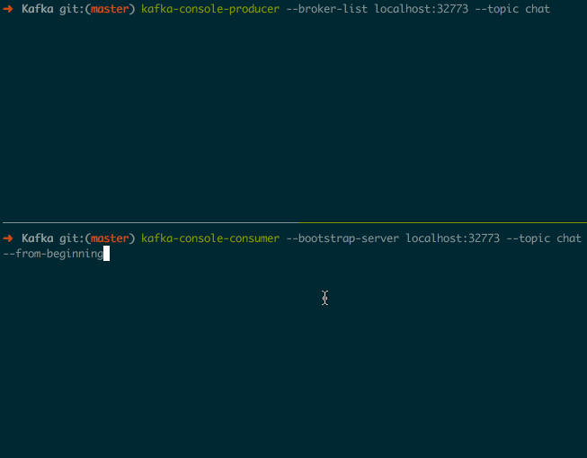

Kafka 入门教程
条评论Kafka 现在在我们公司使用的很广泛, 如用作 AdServer 的日志收集和 Counter 服务的消息系统等.
本文会先介绍下 Kafka 的一些基本概念, 然后介绍如何搭建 Kafka 集群和如何使用, 最后会简要介绍下 Kafka 文件存储的实现原理.
基本概念介绍
Broker可以简单理解为一个 Kafka 节点, 多个 Broker 节点构成整个 Kafka 集群;Topic某种类型的消息的合集;Partition它是 Topic 在物理上的分组, 多个 Partition 会被分散地存储在不同的 Kafka 节点上; 单个 Partition 的消息是保证有序的, 但整个 Topic 的消息就不一定是有序的;Segment包含消息内容的指定大小的文件, 由 index 文件和 log 文件组成; 一个 Partition 由多个 Segment 文件组成OffsetSegment 文件中消息的索引值, 从 0 开始计数
Replica (N)消息的冗余备份, 表现为每个 Partition 都会有 N 个完全相同的冗余备份, 这些备份会被尽量分散存储在不同的机器上;
Producer通过 Broker 发布新的消息到某个 Topic 中;Consumer通过 Broker 从某个 Topic 中获取消息;
如何使用 Kafka
首先介绍下如何搭建 Kafka 集群. 我们基于 docker-compose 来搭建一个 2 个节点的集群, 这里 是详细的介绍文档.
搭建 Kafka 集群
首先编写一个 docker-compose.yml 文件:
version: '2' |
其中 KAFKA_ADVERTISED_HOST_NAME 需要被替换成你本机的 IP 地址, 不能是 localhost 0.0.0.0 之类的地址. KAFKA_CREATE_TOPICS 是为了演示可以在 Kafka 集群启动的时候创建一些默认的 Topic; test:1:1 的含义是默认创建一个名字为 test, Partition 和 Replica 数量都为 1 的 Topic.
在 docker-compose.yml 文件所在的目录执行 docker-compose up -d --scale kafka=2 就会在本机启动一个有两个节点的 Kafka 集群:
➜ Kafka git:(master) docker-compose up -d --scale kafka=2 |
两个节点的 Kafka 集群已经成功启动, 节点对应的 container 名分别为 kafka_kafka_1 和 kafka_kafka_2.
通过 Cli 工具演示生产和消费消息
Kafka 官方自带了一些 cli 工具, 可以进入到 container 内部去访问这些命令:
➜ Kafka git:(master) docker exec -it kafka_kafka_1 bash |
上面的命令列出了当前 Kafka 集群的所有 Topic.
我自己更喜欢直接在宿主机访问 Kafka 集群, 这就需要先安装上 kafka , 在 macOS 中可以通过 brew install kafka 来安装.
安装完成后的使用方法和上面类似, 如列出所有 topic :
➜ Kafka git:(master) kafka-topics --describe --zookeeper localhost:2181 |
接下来我们来演示如何生产与消费消息.
创建一个新的 Topic:
➜ Kafka git:(master) kafka-topics --create --topic chat --partitions 3 --zookeeper localhost:2181 --replication-factor 2 |
新创建的 Topic 名字为 chat, partition 数为 3, replica 数为 2. 可以通过下面的命令验证 Topic 是否成功创建:
➜ Kafka git:(master) kafka-topics --describe --zookeeper localhost:2181 |
创建生产者和消费者进程
消息的生产和消费都需要知道对应的 Broker 地址, 如果在 docker 宿主机上访问的话就需要知道对应的映射端口. 我们可以通过下面的命令获取:

然后通过下面的命令分别去创建消息生产者和消费者:
kafka-console-producer --broker-list localhost:32773 --topic chat |
在生产者中输入消息, 就可以在消费者中看到对应的消息输出了, 效果如下图所示:

可以通过 <Ctrl-c> 来退出这两个进程.
文件存储原理介绍
我们先回顾下前面关于 Topic chat 的一些信息:
Topic:chat PartitionCount:3 ReplicationFactor:2 Configs: |
从上面可以看出 ID 为 1001 的节点 (kafka_kafka_1) 存储了 Partition 0 和 Partitiont 2 的 Leader 部分, 同时也存储了 Partition 1 的一个备份.
Partition 是按照下面的算法分布到多个 Kafka 节点:
- 将所有 N 个 Broker 和待分配的 M 个Partition排序;
- 将第 i 个 Partition 分配到第 (i mod N) 个Broker上;
- 将第 i 个 Partition 的第 j 个副本分配到第 ((i + j) mod N) 个Broker上.
接下来我们看一看 Partition 具体是怎么存储的
我们可以登录到节点 1001 内部看下对应的文件存储:
➜ blog git:(hexo) ✗ docker exec -it kafka_kafka_1 bash |
可以看到每一个 Partition 都是和一个目录对应的, 同时每一个目录里都包含了一个 index 文件和 log 文件:
bash-4.4# ls -lh chat-0 |
其中 log 文件存储实际的消息内容, 而和它同名的 index 文件存储消息的索引数据. log 的文件名存放的是上一个 log 文件中最后一个消息的 offset 值.
可以按照下面的方法找到指定 offset 对应的消息
- 首先定位到对应的 segment ; 这个直接根据文件名进行二分查找就可以找到对应的 segement 了;
- 再在 segment 的 index 文件中顺序查找到 offset 在 log 文件中的位置; index 文件会被映射到内存中.
总结
Kafka 通过给 Topic 指定多个 Partition, 而各个 Partition 分布在不同的节点上, 这样便能提供比较好的并发能力. 同时, 对于 Partition 还可以指定对应的 Replica 数, 这也极大地提高了数据存储的安全性, 防止出现数据丢失.
基于文件名去辅助定位消息的设计还是很巧妙的!
最开始计划写本文时是想通过设计一个聊天的场景来讲解的, 发送者是消息生产者, 接受者是消息的消费者, 对于每个用户都去生成一个对应的 Topic. 后来觉得工作量有些略大, 就放弃了. 或许想学习 Go 的 Kafaka SDK sarama 的时候就会去实现这个示例.
参考文献
推荐阅读
- 本文链接：https://hiberabyss.github.io/2018/05/08/kafka-demo/
- 版权声明：本博客所有文章除特别声明外，均采用 CC BY-NC-SA 3.0 CN 许可协议。转载请注明出处！